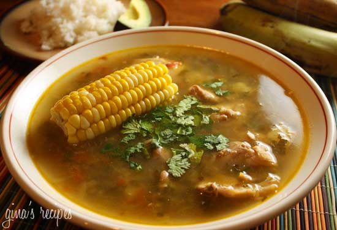

Sancocho

Description
Sancocho is a hearty soup, almost like a stew and is a traditional dish in the region of Antioquia, Colombia that combines potatoes, yuca, corn, plantains and meat.
Ingredients
- 1 teaspoon olive oil
- 5 scallions, chopped
- 1 tomato, chopped
- 4 cloves garlic, chopped
- 1/2 onion, chopped
- 6 skinless chicken thighs on the bone
- 1 cup chopped cilantro
- 3 medium potatoes, peeled and chopped into 2 inch pieces
- 3 pieces of yucca, about 2 cups
- 3 ears corn, cut in half
- 1 small green plantain, peeled and chopped into 1" pieces
- 1 tsp cumin
- 2 chicken boullion cubes
- salt to taste
Steps
- In a large pot, saute scallions, onions and garlic in oil. Add tomatoes and saute another minute.
- Add chicken pieces and season with a little salt. Saute a few minutes, then add yucca and plantain and fill pot with water.
- Add chicken bullion, cumin and half of the cilantro and cover pot.
- Simmer on low for about 40 minutes. After 40 minutes, adjust salt and add potatoes, cook and additional 15 minutes.
- Add corn and cook an additional 7 minutes or until corn is cooked.
- Serve in large bowls, and top with cilantro.